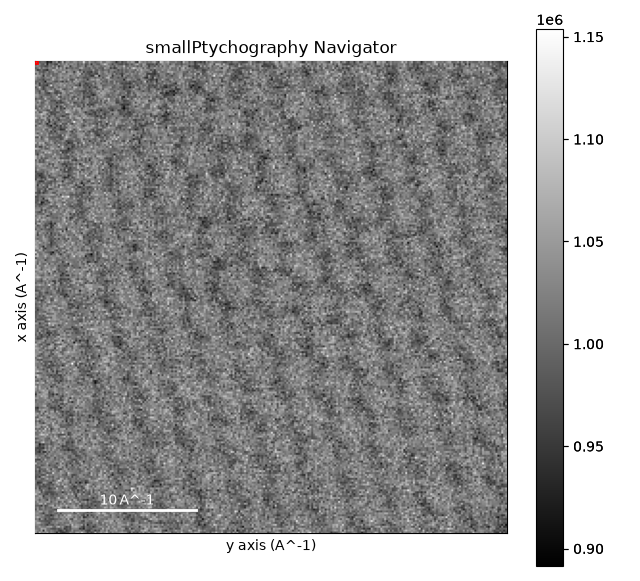
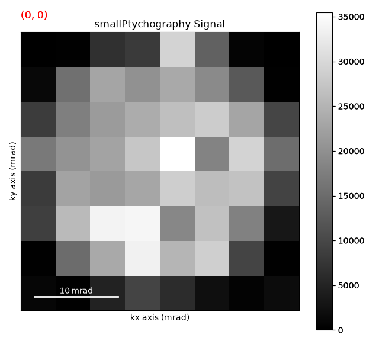

Note
Go to the end to download the full example code.
Loading Data with HyperSpy#
This example demonstrates how to load and visualize data using the HyperSpy library.
import hyperspy.api as hs
from em_database.data import BilayerWS2
# Load a dataset using HyperSpy
dataset = BilayerWS2()
data_path = dataset.download() # Download the dataset if not already available
data = hs.load(data_path)
data
smallPtychography.hspy: 0%| | 0.00/12.5M [00:00<?, ?B/s]
smallPtychography.hspy: 0%| | 4.10k/12.5M [00:00<06:20, 32.8kB/s]
smallPtychography.hspy: 0%| | 28.7k/12.5M [00:00<01:38, 127kB/s]
smallPtychography.hspy: 1%| | 86.0k/12.5M [00:00<00:46, 267kB/s]
smallPtychography.hspy: 1%| | 139k/12.5M [00:00<00:39, 317kB/s]
smallPtychography.hspy: 2%|▏ | 205k/12.5M [00:00<00:32, 376kB/s]
smallPtychography.hspy: 2%|▏ | 262k/12.5M [00:00<00:31, 391kB/s]
smallPtychography.hspy: 3%|▎ | 352k/12.5M [00:00<00:25, 481kB/s]
smallPtychography.hspy: 4%|▎ | 451k/12.5M [00:01<00:21, 558kB/s]
smallPtychography.hspy: 4%|▍ | 532k/12.5M [00:01<00:22, 542kB/s]
smallPtychography.hspy: 5%|▍ | 614k/12.5M [00:01<00:21, 559kB/s]
smallPtychography.hspy: 6%|▌ | 713k/12.5M [00:01<00:19, 606kB/s]
smallPtychography.hspy: 6%|▋ | 795k/12.5M [00:01<00:19, 604kB/s]
smallPtychography.hspy: 7%|▋ | 872k/12.5M [00:01<00:19, 594kB/s]
smallPtychography.hspy: 8%|▊ | 954k/12.5M [00:01<00:19, 596kB/s]
smallPtychography.hspy: 9%|▊ | 1.07M/12.5M [00:02<00:17, 669kB/s]
smallPtychography.hspy: 9%|▉ | 1.17M/12.5M [00:02<00:16, 684kB/s]
smallPtychography.hspy: 10%|█ | 1.25M/12.5M [00:02<00:17, 659kB/s]
smallPtychography.hspy: 11%|█ | 1.38M/12.5M [00:02<00:14, 749kB/s]
smallPtychography.hspy: 12%|█▏ | 1.48M/12.5M [00:02<00:14, 741kB/s]
smallPtychography.hspy: 12%|█▏ | 1.56M/12.5M [00:02<00:15, 699kB/s]
smallPtychography.hspy: 13%|█▎ | 1.66M/12.5M [00:02<00:15, 705kB/s]
smallPtychography.hspy: 14%|█▍ | 1.74M/12.5M [00:03<00:15, 674kB/s]
smallPtychography.hspy: 15%|█▍ | 1.84M/12.5M [00:03<00:15, 688kB/s]
smallPtychography.hspy: 16%|█▌ | 1.94M/12.5M [00:03<00:15, 698kB/s]
smallPtychography.hspy: 16%|█▌ | 2.02M/12.5M [00:03<00:15, 669kB/s]
smallPtychography.hspy: 17%|█▋ | 2.13M/12.5M [00:03<00:14, 720kB/s]
smallPtychography.hspy: 18%|█▊ | 2.27M/12.5M [00:03<00:12, 792kB/s]
smallPtychography.hspy: 19%|█▉ | 2.35M/12.5M [00:03<00:13, 735kB/s]
smallPtychography.hspy: 20%|█▉ | 2.46M/12.5M [00:03<00:13, 767kB/s]
smallPtychography.hspy: 20%|██ | 2.56M/12.5M [00:04<00:13, 753kB/s]
smallPtychography.hspy: 21%|██▏ | 2.66M/12.5M [00:04<00:13, 743kB/s]
smallPtychography.hspy: 22%|██▏ | 2.74M/12.5M [00:04<00:13, 701kB/s]
smallPtychography.hspy: 23%|██▎ | 2.81M/12.5M [00:04<00:14, 653kB/s]
smallPtychography.hspy: 23%|██▎ | 2.89M/12.5M [00:04<00:15, 620kB/s]
smallPtychography.hspy: 24%|██▍ | 3.00M/12.5M [00:04<00:14, 675kB/s]
smallPtychography.hspy: 25%|██▌ | 3.13M/12.5M [00:04<00:12, 760kB/s]
smallPtychography.hspy: 26%|██▌ | 3.23M/12.5M [00:05<00:12, 748kB/s]
smallPtychography.hspy: 27%|██▋ | 3.38M/12.5M [00:05<00:10, 847kB/s]
smallPtychography.hspy: 28%|██▊ | 3.46M/12.5M [00:05<00:11, 780kB/s]
smallPtychography.hspy: 28%|██▊ | 3.54M/12.5M [00:05<00:12, 727kB/s]
smallPtychography.hspy: 30%|██▉ | 3.69M/12.5M [00:05<00:10, 824kB/s]
smallPtychography.hspy: 30%|███ | 3.78M/12.5M [00:05<00:10, 793kB/s]
smallPtychography.hspy: 31%|███ | 3.87M/12.5M [00:05<00:11, 734kB/s]
smallPtychography.hspy: 32%|███▏ | 3.95M/12.5M [00:06<00:12, 694kB/s]
smallPtychography.hspy: 32%|███▏ | 4.03M/12.5M [00:06<00:12, 667kB/s]
smallPtychography.hspy: 33%|███▎ | 4.11M/12.5M [00:06<00:12, 647kB/s]
smallPtychography.hspy: 34%|███▎ | 4.21M/12.5M [00:06<00:12, 669kB/s]
smallPtychography.hspy: 34%|███▍ | 4.29M/12.5M [00:06<00:12, 648kB/s]
smallPtychography.hspy: 35%|███▌ | 4.39M/12.5M [00:06<00:12, 670kB/s]
smallPtychography.hspy: 36%|███▌ | 4.47M/12.5M [00:06<00:12, 649kB/s]
smallPtychography.hspy: 37%|███▋ | 4.57M/12.5M [00:06<00:11, 670kB/s]
smallPtychography.hspy: 38%|███▊ | 4.75M/12.5M [00:07<00:08, 865kB/s]
smallPtychography.hspy: 39%|███▉ | 4.84M/12.5M [00:07<00:09, 804kB/s]
smallPtychography.hspy: 39%|███▉ | 4.93M/12.5M [00:07<00:09, 761kB/s]
smallPtychography.hspy: 40%|████ | 5.01M/12.5M [00:07<00:10, 713kB/s]
smallPtychography.hspy: 41%|████ | 5.09M/12.5M [00:07<00:11, 661kB/s]
smallPtychography.hspy: 41%|████▏ | 5.16M/12.5M [00:07<00:11, 616kB/s]
smallPtychography.hspy: 42%|████▏ | 5.30M/12.5M [00:07<00:09, 755kB/s]
smallPtychography.hspy: 43%|████▎ | 5.40M/12.5M [00:08<00:09, 744kB/s]
smallPtychography.hspy: 45%|████▍ | 5.57M/12.5M [00:08<00:07, 881kB/s]
smallPtychography.hspy: 45%|████▌ | 5.66M/12.5M [00:08<00:08, 832kB/s]
smallPtychography.hspy: 46%|████▌ | 5.76M/12.5M [00:08<00:08, 799kB/s]
smallPtychography.hspy: 47%|████▋ | 5.84M/12.5M [00:08<00:08, 739kB/s]
smallPtychography.hspy: 47%|████▋ | 5.93M/12.5M [00:08<00:09, 697kB/s]
smallPtychography.hspy: 48%|████▊ | 6.01M/12.5M [00:08<00:09, 669kB/s]
smallPtychography.hspy: 49%|████▉ | 6.11M/12.5M [00:09<00:09, 684kB/s]
smallPtychography.hspy: 50%|████▉ | 6.19M/12.5M [00:09<00:09, 659kB/s]
smallPtychography.hspy: 51%|█████ | 6.34M/12.5M [00:09<00:07, 785kB/s]
smallPtychography.hspy: 52%|█████▏ | 6.43M/12.5M [00:09<00:07, 766kB/s]
smallPtychography.hspy: 52%|█████▏ | 6.52M/12.5M [00:09<00:08, 716kB/s]
smallPtychography.hspy: 53%|█████▎ | 6.60M/12.5M [00:09<00:08, 682kB/s]
smallPtychography.hspy: 54%|█████▎ | 6.71M/12.5M [00:09<00:07, 729kB/s]
smallPtychography.hspy: 55%|█████▍ | 6.81M/12.5M [00:09<00:07, 726kB/s]
smallPtychography.hspy: 55%|█████▌ | 6.93M/12.5M [00:10<00:07, 760kB/s]
smallPtychography.hspy: 57%|█████▋ | 7.07M/12.5M [00:10<00:06, 854kB/s]
smallPtychography.hspy: 57%|█████▋ | 7.16M/12.5M [00:10<00:06, 788kB/s]
smallPtychography.hspy: 58%|█████▊ | 7.24M/12.5M [00:10<00:07, 731kB/s]
smallPtychography.hspy: 59%|█████▊ | 7.32M/12.5M [00:10<00:07, 674kB/s]
smallPtychography.hspy: 60%|█████▉ | 7.46M/12.5M [00:10<00:06, 796kB/s]
smallPtychography.hspy: 61%|██████ | 7.59M/12.5M [00:10<00:05, 845kB/s]
smallPtychography.hspy: 62%|██████▏ | 7.69M/12.5M [00:11<00:05, 807kB/s]
smallPtychography.hspy: 62%|██████▏ | 7.79M/12.5M [00:11<00:06, 781kB/s]
smallPtychography.hspy: 63%|██████▎ | 7.87M/12.5M [00:11<00:06, 726kB/s]
smallPtychography.hspy: 64%|██████▎ | 7.95M/12.5M [00:11<00:06, 671kB/s]
smallPtychography.hspy: 64%|██████▍ | 8.02M/12.5M [00:11<00:07, 632kB/s]
smallPtychography.hspy: 65%|██████▍ | 8.12M/12.5M [00:11<00:06, 658kB/s]
smallPtychography.hspy: 66%|██████▌ | 8.22M/12.5M [00:11<00:06, 677kB/s]
smallPtychography.hspy: 67%|██████▋ | 8.31M/12.5M [00:12<00:06, 690kB/s]
smallPtychography.hspy: 67%|██████▋ | 8.41M/12.5M [00:12<00:05, 699kB/s]
smallPtychography.hspy: 69%|██████▊ | 8.56M/12.5M [00:12<00:04, 813kB/s]
smallPtychography.hspy: 69%|██████▉ | 8.66M/12.5M [00:12<00:04, 785kB/s]
smallPtychography.hspy: 70%|██████▉ | 8.74M/12.5M [00:12<00:05, 730kB/s]
smallPtychography.hspy: 71%|███████ | 8.82M/12.5M [00:12<00:05, 691kB/s]
smallPtychography.hspy: 72%|███████▏ | 8.97M/12.5M [00:12<00:04, 808kB/s]
smallPtychography.hspy: 73%|███████▎ | 9.07M/12.5M [00:12<00:04, 782kB/s]
smallPtychography.hspy: 73%|███████▎ | 9.15M/12.5M [00:13<00:04, 727kB/s]
smallPtychography.hspy: 74%|███████▍ | 9.23M/12.5M [00:13<00:04, 690kB/s]
smallPtychography.hspy: 75%|███████▍ | 9.31M/12.5M [00:13<00:04, 663kB/s]
smallPtychography.hspy: 75%|███████▌ | 9.41M/12.5M [00:13<00:04, 671kB/s]
smallPtychography.hspy: 76%|███████▋ | 9.56M/12.5M [00:13<00:03, 794kB/s]
smallPtychography.hspy: 77%|███████▋ | 9.64M/12.5M [00:13<00:03, 736kB/s]
smallPtychography.hspy: 78%|███████▊ | 9.79M/12.5M [00:13<00:03, 839kB/s]
smallPtychography.hspy: 79%|███████▉ | 9.87M/12.5M [00:14<00:03, 776kB/s]
smallPtychography.hspy: 80%|███████▉ | 9.95M/12.5M [00:14<00:03, 713kB/s]
smallPtychography.hspy: 80%|████████ | 10.0M/12.5M [00:14<00:03, 661kB/s]
smallPtychography.hspy: 81%|████████ | 10.1M/12.5M [00:14<00:03, 697kB/s]
smallPtychography.hspy: 82%|████████▏ | 10.2M/12.5M [00:14<00:03, 739kB/s]
smallPtychography.hspy: 83%|████████▎ | 10.3M/12.5M [00:14<00:02, 733kB/s]
smallPtychography.hspy: 84%|████████▍ | 10.5M/12.5M [00:14<00:02, 837kB/s]
smallPtychography.hspy: 85%|████████▌ | 10.6M/12.5M [00:15<00:02, 873kB/s]
smallPtychography.hspy: 86%|████████▌ | 10.8M/12.5M [00:15<00:01, 935kB/s]
smallPtychography.hspy: 87%|████████▋ | 10.9M/12.5M [00:15<00:01, 941kB/s]
smallPtychography.hspy: 88%|████████▊ | 11.0M/12.5M [00:15<00:01, 867kB/s]
smallPtychography.hspy: 89%|████████▊ | 11.1M/12.5M [00:15<00:01, 805kB/s]
smallPtychography.hspy: 89%|████████▉ | 11.2M/12.5M [00:15<00:01, 743kB/s]
smallPtychography.hspy: 90%|█████████ | 11.3M/12.5M [00:15<00:01, 727kB/s]
smallPtychography.hspy: 91%|█████████ | 11.4M/12.5M [00:15<00:01, 797kB/s]
smallPtychography.hspy: 92%|█████████▏| 11.5M/12.5M [00:16<00:01, 873kB/s]
smallPtychography.hspy: 93%|█████████▎| 11.6M/12.5M [00:16<00:01, 828kB/s]
smallPtychography.hspy: 94%|█████████▍| 11.7M/12.5M [00:16<00:00, 796kB/s]
smallPtychography.hspy: 95%|█████████▌| 11.9M/12.5M [00:16<00:00, 880kB/s]
smallPtychography.hspy: 96%|█████████▌| 12.0M/12.5M [00:16<00:00, 905kB/s]
smallPtychography.hspy: 97%|█████████▋| 12.1M/12.5M [00:16<00:00, 841kB/s]
smallPtychography.hspy: 98%|█████████▊| 12.2M/12.5M [00:16<00:00, 778kB/s]
smallPtychography.hspy: 98%|█████████▊| 12.3M/12.5M [00:17<00:00, 725kB/s]
smallPtychography.hspy: 99%|█████████▉| 12.4M/12.5M [00:17<00:00, 687kB/s]
smallPtychography.hspy: 100%|█████████▉| 12.4M/12.5M [00:17<00:00, 660kB/s]
smallPtychography.hspy: 0%| | 0.00/12.5M [00:00<?, ?B/s]
smallPtychography.hspy: 100%|██████████| 12.5M/12.5M [00:00<00:00, 62.8GB/s]
WARNING | Hyperspy | This file contains a signal provided by the pyxem Python package that is not currently installed. The signal will be loaded into a generic HyperSpy signal. Consider installing pyxem to load this dataset into its original signal class. (hyperspy.io:949)
WARNING | Hyperspy | `signal_type='electron_diffraction'` not understood. See `hs.print_known_signal_types()` for a list of installed signal types or https://github.com/hyperspy/hyperspy-extensions-list for the list of all hyperspy extensions providing signals. (hyperspy.io:893)
<Signal2D, title: , dimensions: (246, 246|8, 8)>
Display the dataset
data.plot()


WARNING | Hyperspy | Numba is not installed, falling back to non-accelerated implementation. (hyperspy.decorators:256)
WARNING | Hyperspy | Numba is not installed, falling back to non-accelerated implementation. (hyperspy.decorators:256)
WARNING | Hyperspy | Numba is not installed, falling back to non-accelerated implementation. (hyperspy.decorators:256)
WARNING | Hyperspy | Numba is not installed, falling back to non-accelerated implementation. (hyperspy.decorators:256)
WARNING | Hyperspy | Numba is not installed, falling back to non-accelerated implementation. (hyperspy.decorators:256)
WARNING | Hyperspy | Numba is not installed, falling back to non-accelerated implementation. (hyperspy.decorators:256)
WARNING | Hyperspy | Numba is not installed, falling back to non-accelerated implementation. (hyperspy.decorators:256)
WARNING | Hyperspy | `signal_type='electron_diffraction'` not understood. See `hs.print_known_signal_types()` for a list of installed signal types or https://github.com/hyperspy/hyperspy-extensions-list for the list of all hyperspy extensions providing signals. (hyperspy.io:893)
WARNING | Hyperspy | `signal_type='electron_diffraction'` not understood. See `hs.print_known_signal_types()` for a list of installed signal types or https://github.com/hyperspy/hyperspy-extensions-list for the list of all hyperspy extensions providing signals. (hyperspy.io:893)
Total running time of the script: (0 minutes 18.817 seconds)